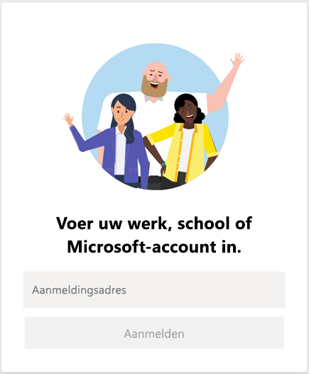
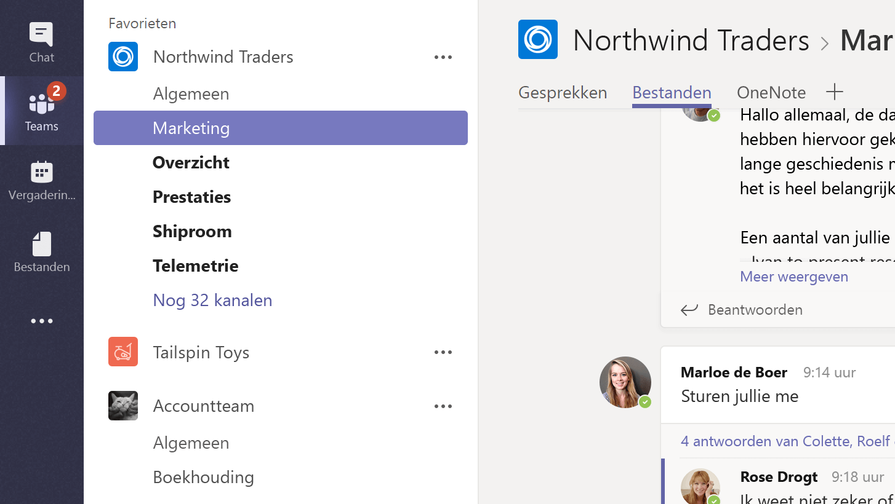
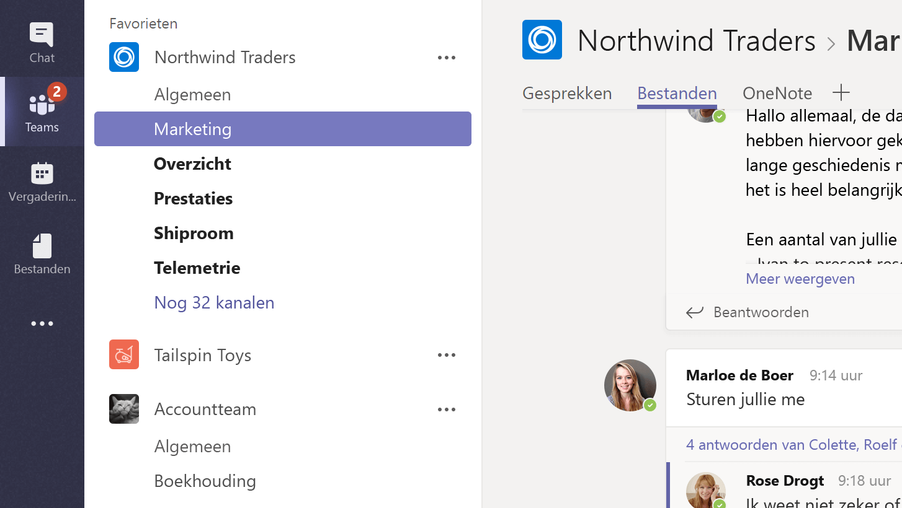

1. Start Teams.
■ Klik in Windows op Start Knop Start Microsoft Teams.
■ Als u een Mac gebruikt gaat u naar de map Programma’s en klikt u op Microsoft Teams.
■ Op een mobiel apparaat tikt u op het pictogram van Teams.
2. Meld u aan met uw gebruikersnaam en wachtwoord voor Microsoft 365.
 Selecteer een team en een kanaal.
Een team is een verzameling mensen, gesprekken, bestanden en hulpmiddelen, allemaal op één plaats. Een kanaal is een gesprek in een team, dat gewijd is aan één afdeling, project of onderwerp.
Om uw vertrouwd te maken met teams en kanalen kunt u het best gewoon een team en een kanaal kiezen en alles bekijken!
1. Selecteer Teams aan de linkerzijde van de app en kies vervolgens een team.
aan de linkerzijde van de app en kies vervolgens een team.
Als u zich niet in een team bevindt en u wilt er een maken, raadpleegt u Haal uw teams binnen.
2. Selecteer een kanaal en verken de tabbladen Gesprekken, Bestanden en Notities.
Zie voor meer informatie Teams en kanalen.
Aanmelden en aan de slag gaan met Teams
Zich aanmelden bij Teams1. Start Teams.
■ Klik in Windows op Start Knop Start Microsoft Teams.
■ Als u een Mac gebruikt gaat u naar de map Programma’s en klikt u op Microsoft Teams.
■ Op een mobiel apparaat tikt u op het pictogram van Teams.
2. Meld u aan met uw gebruikersnaam en wachtwoord voor Microsoft 365.
Opmerking: Teams maakt deel uit van Microsoft 365, dus u hebt een licentie voor Microsoft 365-apps voor bedrijven of een Enterprise-licentie nodig om Teams te kunnen gebruiken. U vindt meer informatie in Hoe krijg ik toegang tot Microsoft Teams?
 Selecteer een team en een kanaal.
Een team is een verzameling mensen, gesprekken, bestanden en hulpmiddelen, allemaal op één plaats. Een kanaal is een gesprek in een team, dat gewijd is aan één afdeling, project of onderwerp.
Om uw vertrouwd te maken met teams en kanalen kunt u het best gewoon een team en een kanaal kiezen en alles bekijken!
1. Selecteer Teams
aan de linkerzijde van de app en kies vervolgens een team.
Als u zich niet in een team bevindt en u wilt er een maken, raadpleegt u Haal uw teams binnen.
2. Selecteer een kanaal en verken de tabbladen Gesprekken, Bestanden en Notities.
Zie voor meer informatie Teams en kanalen.